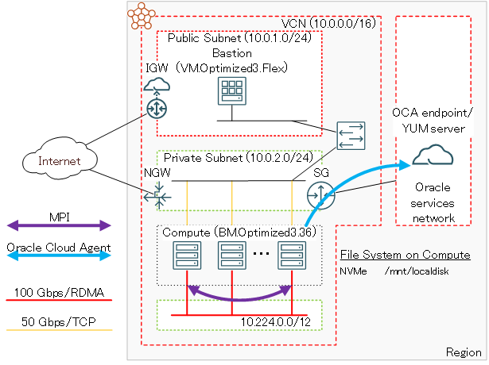
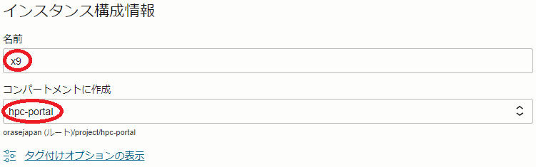
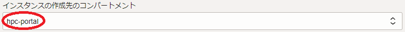
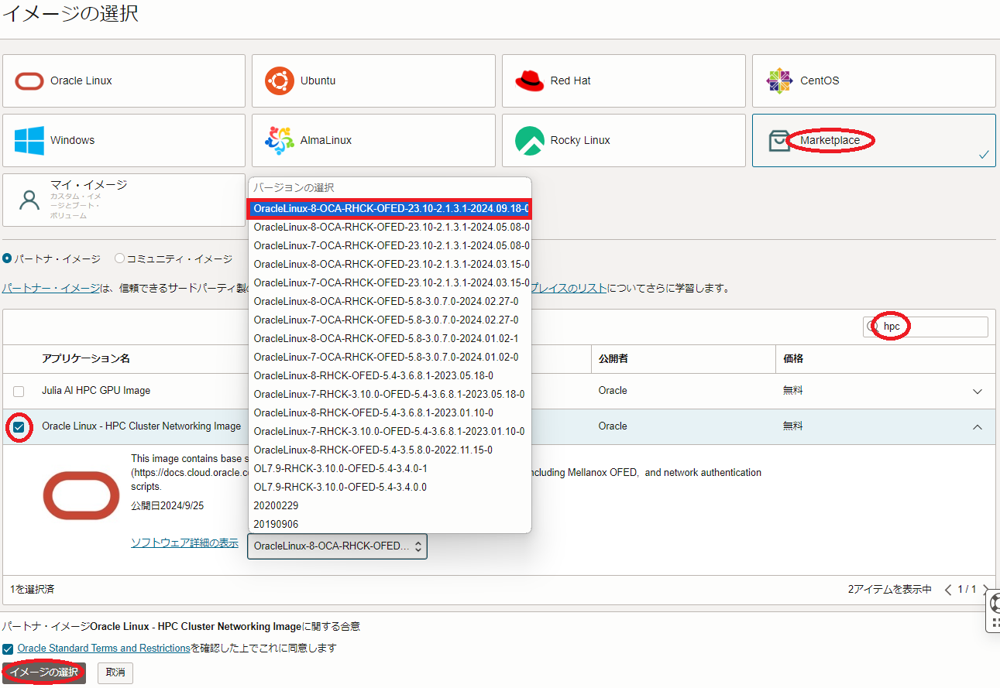
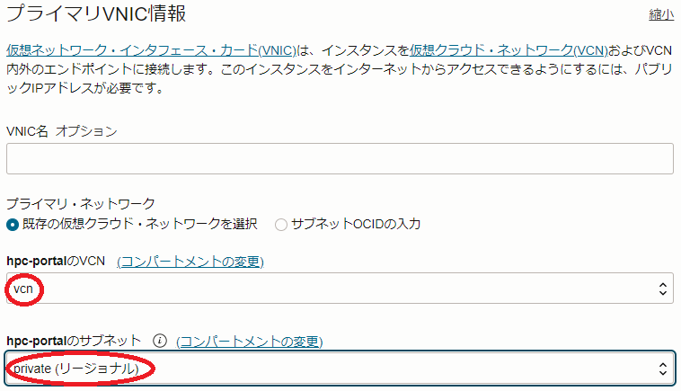
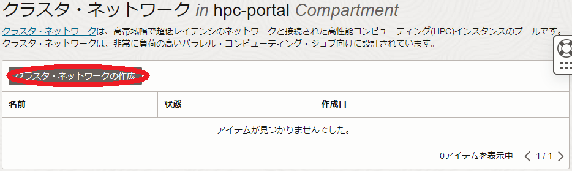
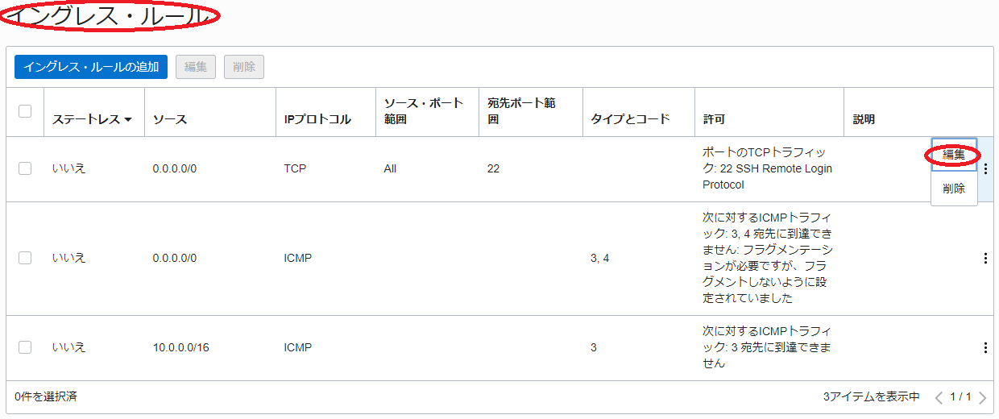

このチュートリアルは、HPC向けIntel Ice Lakeプロセッサを搭載する BM.Optimized3.36 を クラスタ・ネットワーク を使用してノード間接続し、HPCワークロードを実行するためのHPCクラスタを構築する際のベースとなるインフラストラクチャを構築、そのインターコネクト性能を検証します。
このチュートリアルで作成する環境は、ユーザ管理、ホスト名管理、共有ファイルシステム、プログラム開発環境、ジョブスケジューラ等、必要なソフトウェア環境をこの上に整備し、ご自身の要件に沿ったHPCクラスタを構築する際の基礎インフラストラクチャとして利用することが可能です。 なお、これらのクラスタ管理に必要なソフトウェアの導入までを自動化する HPCクラスタスタック も利用可能で、詳細は OCI HPCチュートリアル集 の HPCクラスタを構築する(スタティッククラスタ自動構築編) を参照ください。

またこのチュートリアルは、環境構築後により大規模な計算を実施する必要が生じたり、メンテナンスによりノードを入れ替える必要が生じることを想定し、既存のクラスタ・ネットワークに計算ノードを追加する方法と、特定の計算ノードを入れ替える方法も学習します。
所要時間 : 約1時間
前提条件 : クラスタ・ネットワークを収容するコンパートメント(ルート・コンパートメントでもOKです)の作成と、このコンパートメントに対する必要なリソース管理権限がユーザーに付与されていること。
注意 : チュートリアル内の画面ショットについては、OCIの現在のコンソール画面と異なっている場合があります。
0. HPCクラスタ作成事前作業
0-0. 概要
HPCクラスタを構成する クラスタ・ネットワーク と計算ノードは、OCIコンソールからクラスタ・ネットワークを作成することで、計算ノードをクラスタ・ネットワークに接続したHPCクラスタとしてデプロイされます。
このため、この計算ノードをTCP接続するVCNと、インターネットから直接アクセス出来ないプライベートサブネットに通常接続される計算ノードにログインする際の踏み台となるBastionノードを、HPCクラスタ作成前に予め用意する必要があります。
本章は、これらHPCクラスタ作成の前提となるリソースを作成します。
0-1. VCN作成
本章は、計算ノードをTCP接続するVCNを作成します。
VCNの作成は、以下チュートリアルページ クラウドに仮想ネットワーク(VCN)を作る の手順通りに実行し、
https://oracle-japan.github.io/ocitutorials/beginners/creating-vcn
以下のリソースを作成します。
- VCN（10.0.0.0/16）
- パブリックサブネット（10.0.0.0/24）
- プライベートサブネット（10.0.1.0/24）
- インターネット・ゲートウェイ（パブリックサブネットにアタッチ）
- NATゲートウェイ（プライベートサブネットにアタッチ）
- サービス・ゲートウェイ（プライベートサブネットにアタッチ）
- ルート表 x 2（パブリックサブネットとプライベートサブネットにアタッチ）
- セキュリティリスト x 2（パブリックサブネットとプライベートサブネットにアタッチ）
このVCNは、セキュリティリストで以下のアクセス制限が掛けられています。
- インターネットからのアクセス：パブリックサブネットに接続されるインスタンスの22番ポート（SSH）に限定
- インターネットへのアクセス：インターネット上の任意のIPアドレス・ポートに制限なくアクセス可能
0-2. Bastionノード作成
本章は、計算ノードにログインする際の踏み台となるbastinノードを作成します。 Bastionノードの作成は、以下チュートリアルページ インスタンスを作成する の手順を参考に、
https://oracle-japan.github.io/ocitutorials/beginners/creating-compute-instance
ご自身の要件に沿ったインスタンスを、先の手順でVCNを作成したコンパートメントとパブリックサブネットを指定して作成します。本チュートリアルは、以下属性のインスタンスをBastionノードとして作成します。
- イメージ : Oracle Linux 8
- シェイプ : VM.Optimized3.Flex（1 OCPU）
- SSHキーの追加 : Bastionノードへのログインで使用するSSH秘密鍵に対応する公開鍵
次に、このBastionノード上でSSHの鍵ペアを作成します。このSSH鍵は、Bastionノードから計算ノードにログインする際に使用します。 先のチュートリアル インスタンスを作成する に記載のインスタンスへの接続方法に従い、BastionノードにopcユーザでSSHログインして以下コマンドでSSH鍵ペアを作成、作成された公開鍵を後のクラスタ・ネットワーク作成手順で指定します。
> ssh-keygen
Generating public/private rsa key pair.
Enter file in which to save the key (/home/opc/.ssh/id_rsa):
Enter passphrase (empty for no passphrase):
Enter same passphrase again:
Your identification has been saved in /home/opc/.ssh/id_rsa.
Your public key has been saved in /home/opc/.ssh/id_rsa.pub.
The key fingerprint is:
SHA256:2EvR7FXtEYAsDknJG1oREie1kv2r1PN3OYrYCP/Xlyg opc@bast
The keys randomart image is:
+---[RSA 2048]----+
| +=*= . ..oo.|
| *B.+ o . ..|
| ooo* + . ..|
| ..+.+ . .|
| . S.. |
| .... |
| o.+ o o|
| . + *E.+ *.|
| . +.=+.o o|
+----[SHA256]-----+
> cat .ssh/id_rsa.pub
ssh-rsa AAAAB3NzaC1yc2EAAAADAQABAAABAQD0TDo4QJPbXNRq/c5wrc+rGU/dLZdUziHPIQ7t/Wn+00rztZa/3eujw1DQvMsoUrJ+MHjE89fzZCkBS2t4KucqDfDqcrPuaKF3+LPBkgW0NdvytBcBP2J9zk15/O9tIVvsX8WBi8jgPGxnQMo4mQuwfvMh1zUF5dmvX3gXU3p+lH5akZa8sy/y16lupge7soN01cQLyZfsnH3BA7TKFyHxTe4MOSHnbv0r+6Cvyy7Url0RxCHpQhApA68KBIbfvhRHFg2WNtgggtVGWk+PGmTK7DTtYNaiwSfZkuqFdEQM1T6ofkELDruB5D1HgDi3z+mnWYlHMNHZU5GREH66acGJ opc@bast
次に、以降作成する計算ノードの名前解決をインスタンス名で行うため、 OCI HPCテクニカルTips集 の 計算ノードの効果的な名前解決方法 の手順を実施します。
1. HPCクラスタ作成
1-0. 概要
クラスタ・ネットワーク は、作成時に指定する インスタンス構成 に基づいて インスタンス・プール が作成時に指定するノード数の計算ノードをデプロイし、これをクラスタ・ネットワークに接続します。
クラスタ・ネットワークに接続する計算ノードは、OS起動時点でクラスタ・ネットワークに接続するネットワークインターフェースが作成されていないため、 cloud-init でこの作成を行います。また本チュートリアルでは、計算ノードに使用するBM.Optimized3.36に装備されるNVMeローカルディスクのファイルシステム作成も、cloud-initから行います。
以上より、HPCクラスタの作成は、以下の手順を経て行います。
- cloud-init設定ファイル（cloud-config）作成
- インスタンス構成作成
- クラスタ・ネットワーク作成
1-1. cloud-config作成
本章は、 cloud-init 設定ファイル（cloud-config）を作成します。
本チュートリアルは、cloud-initを以下の目的で使用します。
- NVMeローカルディスクファイルシステム作成
- firewalld停止
- クラスタ・ネットワーク 接続用ネットワークインターフェース起動
以下は、本チュートリアルで使用するBM.Optimized3.36用のcloud-configで、OCIコンソールを実行している端末上にテキストファイルで保存します。
#cloud-config
runcmd:
#
# Mount NVMe local storage
- parted -s /dev/nvme0n1 mklabel gpt
- parted -s /dev/nvme0n1 -- mkpart primary xfs 1 -1
# To ensure partition is really created before mkfs phase
- sleep 60
- mkfs.xfs -L localscratch /dev/nvme0n1p1
- mkdir -p /mnt/localdisk
- echo "LABEL=localscratch /mnt/localdisk/ xfs defaults,noatime 0 0" >> /etc/fstab
- mount /mnt/localdisk
#
# Stop firewalld
- systemctl stop firewalld
- systemctl disable firewalld
#
# Set up cluster network interface
- systemctl start oci-rdma-configure
このcloud-configで行っているクラスタ・ネットワーク接続用ネットワークインターフェース起動は、クラスタ・ネットワーク対応OSイメージに含まれるsystemdのサービス oci-rdma-configure を使用しますが、この詳細はテクニカルTips クラスタ・ネットワーク接続用ネットワークインターフェース作成方法 を参照ください。
1-2. インスタンス構成作成
本章は、 インスタンス構成 を作成します。
-
OCIコンソールにログインし、HPCクラスタをデプロイするリージョンを選択後、 コンピュート → インスタンス構成 とメニューを辿ります。
-
表示される以下画面で、インスタンス構成の作成 ボタンをクリックします。

-
表示される インスタンス構成の作成 画面で、以下の情報を入力し 作成 ボタンをクリックします。なお、ここに記載のないフィールドは、デフォルトのままとします。
3.1 インスタンス構成情報 フィールド
- 名前 ：インスタンス構成に付与する名前
- コンパートメントに作成 ：インスタンス構成を作成するコンパートメント

3.2 インスタンスの作成先のコンパートメント フィールド：クラスタ・ネットワークをデプロイするコンパートメント

3.3 配置 フィールド
- 可用性ドメイン ：クラスタ・ネットワークをデプロイする可用性ドメイン
3.4 イメージとシェイプ フィールド

- イメージ ：Oracle Linux - HPC Cluster Networking Image (イメージの変更 ボタンをクリックして表示される以下 イメージの選択 サイドバーで Marketplace を選択し検索フィールドに hpc と入力して表示される Oracle Linux - HPC Cluster Networking Image を選択して表示される イメージ・ビルド フィールドで、バージョン7.9系を使用する場合は OracleLinux-7 で始まる最新を、バージョン8系を使用する場合は OracleLinux-8 で始まる最新を選択し、 イメージの選択 ボタンをクリック。）

- Shape ：BM.Optimized3.36 (Change Shape ボタンをクリックして表示される以下 すべてのシェイプの参照 サイドバーで ベア・メタル・マシン をクリックして表示される BM.Optimized3.36 を選択し シェイプの選択 ボタンをクリック）

3.5 ネットワーキング フィールド
- プライマリ・ネットワーク ： 先に作成したVCNを選択
- サブネット ：先に作成したプライベートサブネットを選択

3.6 SSHキーの追加 フィールド
- SSHキー ：先にBastionノードで作成したSSH鍵の公開鍵（ 公開キーの貼付け を選択することで入力フィールドを表示）
3.7 管理 フィールド（以下 拡張オプションの表示 ボタンを選択して表示）

- cloud-initスクリプト ：先に作成したcloud-init設定ファイル（cloud-config）を選択（ 参照 ボタンでファイルを選択）

1-3. クラスタ・ネットワーク作成
本章は、 クラスタ・ネットワーク を作成します。
-
OCIコンソールにログインし、HPCクラスタをデプロイするリージョンを選択後、 コンピュート → クラスタ・ネットワーク とメニューを辿ります。
-
表示される以下画面で、クラスタ・ネットワークの作成 ボタンをクリックします。

-
表示される クラスタ・ネットワークの作成 画面で、以下の情報を入力し クラスタ・ネットワークの作成 ボタンをクリックします。なお、ここに記載のないフィールドは、デフォルトのままとします。
3.1 名前 フィールド：クラスタ・ネットワークに付与する名前
3.2 コンパートメントに作成 フィールド：クラスタ・ネットワークを作成するコンパートメント

3.2 可用性ドメイン フィールド：クラスタ・ネットワークをデプロイする可用性ドメイン

3.3 ネットワーキングの構成 フィールド
- 仮想クラウド・ネットワーク ：先に作成したVCNを選択
- サブネット ：先に作成したプライベートサブネットを選択
3.4 インスタンス・プールの構成 フィールド
- インスタンス・プール名 ：作成されるインスタンス・プールに付与する名前
- インスタンス数 ：デプロイする計算ノードのノード数
- インスタンス構成 ：先に作成したインスタンス構成
-
表示される以下 クラスタ・ネットワーク作業リクエスト 画面で、左上のステータスが プロビジョニング中 と表示されれば、クラスタ・ネットワークと計算ノードの作成が実施されています。
ステータスが 実行中 となれば、クラスタ・ネットワークと計算ノードの作成が完了しています。
2. 計算ノード確認
本章は、デプロイされた計算ノードにログインし、環境を確認します。
2-1. 計算ノードログイン
計算ノードは、プライベートサブネットに接続されており、インターネットからログインすることが出来ないため、Bastionノードを経由してSSHログインします。Bastionノードから計算ノードへのログインは、計算ノードのインスタンス名を使用します。
計算ノードのインスタンス名は、OCIコンソールで計算ノードをデプロイしたリージョンを選択後、 コンピュート → インスタンス とメニューを辿り、以下のインスタンス一覧からそのインスタンス名を確認します。
またこの画面は、計算ノードのIPアドレスも表示されており、これを使用してBastionノードからSSHログインすることも可能です。
計算ノードへのログインは、以下のようにBastionノードからopcユーザでSSHログインします。
> ssh inst-wyr6m-comp
The authenticity of host 'inst-wyr6m-comp (10.0.1.61)' cant be established.
ECDSA key fingerprint is SHA256:z1Hqcm+vNKQLCvqL6t1fqCgqpqo+onshYP7tI1AcwYU.
ECDSA key fingerprint is MD5:0a:86:6f:d3:86:36:d0:7d:74:3e:8c:3f:cd:4c:3a:68.
Are you sure you want to continue connecting (yes/no)? yes
Warning: Permanently added 'inst-wyr6m-comp,10.0.1.61' (ECDSA) to the list of known hosts.
2-2. cloud-init完了確認
cloud-init は、計算ノードが起動してSSHログインできる状態であっても、その処理が継続している可能性があるため、以下コマンドでそのステータスを表示し、 done となっていることでcloud-initの処理完了を確認します。
ステータスが running の場合は、cloud-initの処理が継続中のため、処理が完了するまで待ちます。
> sudo cloud-init status
status: done
2-3. 計算ノードファイルシステム確認
計算ノードは、以下のようにNVMe領域が/mnt/localdiskにマウントされています。
> df -k /mnt/localdisk
Filesystem 1K-blocks Used Available Use% Mounted on
/dev/nvme0n1p1 3748905484 32976 3748872508 1% /mnt/localdisk
3. MPIプログラム実行（2ノード編）
3-0. MPIプログラム実行（2ノード編）概要
本章は、計算ノードのHPCイメージに含まれるOpenMPIとIntel MPI Benchmarkを使用し、 クラスタ・ネットワーク のノード間インターコネクト性能を確認します。
OpenMPIを計算ノード間で実行するためには、mpirunを実行する計算ノード（いわゆるヘッドノード）からOpenMPI実行に参加する他の全ての計算ノードに対して、パスフレーズ無しでSSH接続できる必要があります。
またOpenMPIの実行は、これを実行する計算ノード間で必要なポートにアクセス出来る必要があるため、先に作成したプライベートサブネットのセキュリティリストを修正する必要があります。
以上より、本章で実施するIntel MPI BenchmarkによるMPIプログラム実行は、以下の手順を経て行います。
- 計算ノード間SSH接続環境構築
- プライベートサブネットセキュリティリスト修正
- Intel MPI Benchmark Ping-Pong実行
3-1. 計算ノード間SSH接続環境構築
本章は、先にBastionノードで作成したSSH秘密鍵を全ての計算ノードにコピーすることで、全ての計算ノード間でパスフレーズ無しのSSH接続環境を実現します。
まず初めに、 OCI HPCテクニカルTips集 の 計算ノードのホスト名リスト作成方法 の手順を実施し、以下のように全ての計算ノードのホスト名を含むホスト名リストをBastionノード上にファイル名 hostlist.txt で作成します。
inst-wyr6m-comp
inst-9wead-comp
次にこのホスト名リストを使用し、以下コマンドで全計算ノードにBastionノードのSSH秘密鍵をコピーします。この際、計算ノード1ノード毎に接続確認を求められるため、全てに yes を入力します。
> for hname in `cat hostlist.txt`; do echo $hname; scp -p ~/.ssh/id_rsa $hname:~/.ssh/; done
inst-wyr6m-comp
The authenticity of host 'inst-wyr6m-comp (10.0.1.61)' cannot be established.
ECDSA key fingerprint is SHA256:z1Hqcm+vNKQLCvqL6t1fqCgqpqo+onshYP7tI1AcwYU.
ECDSA key fingerprint is MD5:0a:86:6f:d3:86:36:d0:7d:74:3e:8c:3f:cd:4c:3a:68.
Are you sure you want to continue connecting (yes/no)? yes
Warning: Permanently added 'inst-wyr6m-comp,10.0.1.61' (ECDSA) to the list of known hosts.
id_rsa 100% 1675 1.9MB/s 00:00
inst-9wead-comp
The authenticity of host 'inst-9wead-comp (10.0.1.62)' cannot be established.
ECDSA key fingerprint is SHA256:alxTYf1T2VGbwLYSuvBs5X29YorXB40rAwWWuVDKxPA.
ECDSA key fingerprint is MD5:14:73:f4:87:3c:43:72:b5:cc:b2:e8:37:15:2f:20:3e.
Are you sure you want to continue connecting (yes/no)? yes
Warning: Permanently added 'inst-9wead-comp,10.0.1.62' (ECDSA) to the list of known hosts.
id_rsa 100% 1675 1.8MB/s 00:00
次に、先のSSH秘密鍵のコピーでBastionノードに作成された全計算ノードのエントリを含むknown_hostsファイルを、以下コマンドで全計算ノードにコピーします。
> for hname in `cat hostlist.txt`; do echo $hname; scp -p ~/.ssh/known_hosts $hname:~/.ssh/; done
inst-wyr6m-comp
known_hosts 100% 440 631.9KB/s 00:00
inst-9wead-comp
known_hosts 100% 440 470.6KB/s 00:00
次に、後のIntel MPI Benchmark Ping-Pongを実行する際に使用する先に作成したホスト名リストを、以下コマンドで全計算ノードにコピーします。
> for hname in `cat hostlist.txt`; do echo $hname; scp -p ./hostlist.txt $hname:~/; done
inst-wyr6m-comp
hostlist.txt 100% 32 113.3KB/s 00:00
inst-9wead-comp
hostlist.txt 100% 32 146.3KB/s 00:00
3-2. プライベートサブネットセキュリティリスト修正
本章は、プライベートサブネットのセキュリティリストを以下の手順で修正します。
-
OCIコンソールにログインし、計算ノードをデプロイしたリージョンを選択後、 ネットワーキング → 仮想クラウド・ネットワーク とメニューを辿ります。
-
表示される画面で、先に作成した仮想クラウド・ネットワークをクリックします。
-
表示される以下 サブネット フィールドで、先に作成したプライベートサブネットをクリックします。

-
表示される以下 セキュリティ・リスト フィールドで、プライベートサブネットに適用されているセキュリティリストをクリックします。

-
表示される以下 イングレス・ルール フィールドで、SSHアクセスを許可しているルールの 編集 メニューをクリックします。

-
表示される以下 イングレス・ルールの編集 サイドバーで、 IPプロトコル フィールドを すべてのプロトコル に変更し、 変更の保存 ボタンをクリックします。

-
表示される以下 イングレス・ルール フィールドで、変更したルールの IPプロトコル が すべてのプロトコル に変更されたことを確認します。
3-3. Intel MPI Benchmark Ping-Pong実行
本章は、 Intel MPI Benchmark の Ping-Pong を実行します。
OCI HPCベンチマーク情報 の Intel MPI Benchmark実行方法 の OpenMPIでIntel MPI Benchmarkを実行する場合 の手順に従い、 Ping-Pong を実行します。
4. 計算ノード追加
本章は、作成した クラスタ・ネットワーク に接続する計算ノードを2ノード追加して4ノードに拡張します。
この手順は、 OCI HPCテクニカルTips集 の 計算/GPUノードの追加・削除・入れ替え方法 の 2. ノード数を増やす 手順を実施します。
5. MPIプログラム実行（4ノード編）
5-0. MPIプログラム実行（4ノード編）概要
本章は、追加した2ノードを含めた計4ノードで Intel MPI Benchmark の All-Reduce を実行します。
5-1. 計算ノード間SSH接続環境構築
本章は、追加した2ノードを含めた4ノードの計算ノード間で、パスフレーズ無しのSSH接続ができる環境を構築します。
具体的な手順は、 3-1. 計算ノード間SSH接続環境構築 を参照ください。
5-2. Intel MPI Benchmark All-Reduce実行
OCI HPCベンチマーク情報 の Intel MPI Benchmark実行方法 の OpenMPIでIntel MPI Benchmarkを実行する場合 の手順に従い、 All-Reduce を実行します。
6. 計算ノード入れ替え
本章は、構築した4ノードクラスタのうち1ノードにハードウェア障害等が発生した場合を想定し、この計算ノードを新たな計算ノードに入れ替えます。
この手順は、 OCI HPCテクニカルTips集 の 計算ノードの追加・削除・入れ替え方法 の ノードを置き換える 手順を実施します。
再度 5. MPIプログラム実行（4ノード編） に従い Intel MPI Benchmark を実行、インターコネクト性能が十分出ていることを確認します。
7. クラスタ・ネットワークの終了
本章は、 クラスタ・ネットワーク を終了することで、作成したクラスタ・ネットワークと計算ノードを削除します。
-
OCIコンソールメニューから コンピュート → クラスタ・ネットワーク を選択し、表示される以下画面で作成したクラスタ・ネットワークの 終了 メニューをクリックします。

クラスタ・ネットワークの 状態 が 終了済 となれば、削除が完了しています。
これで、このチュートリアルは終了です。